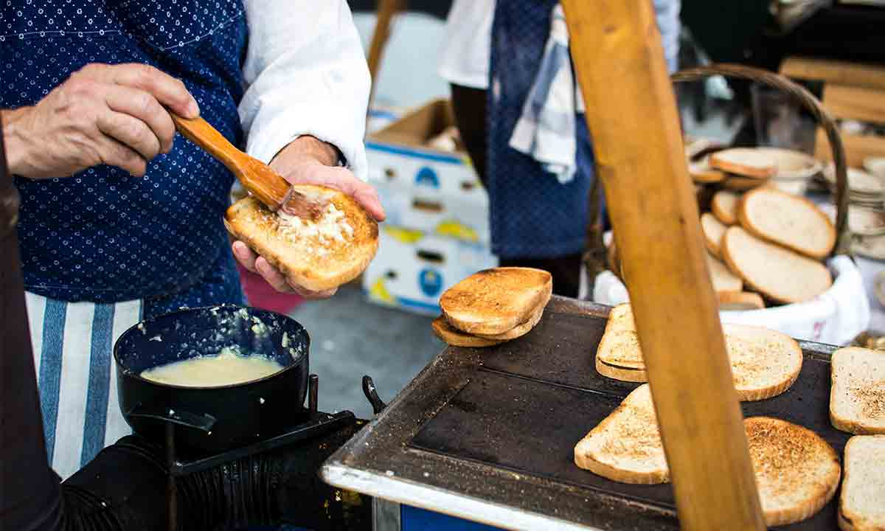
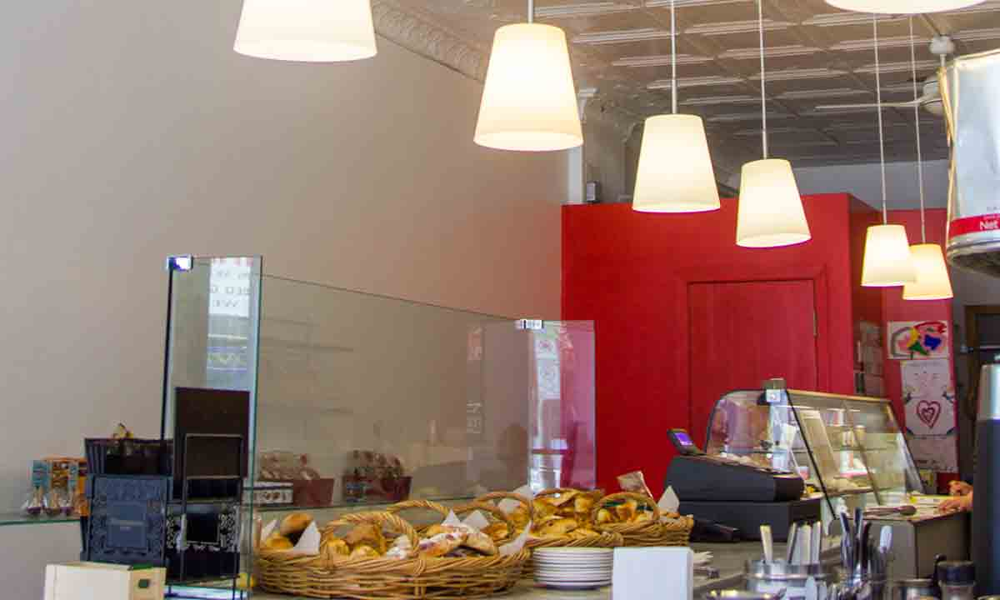
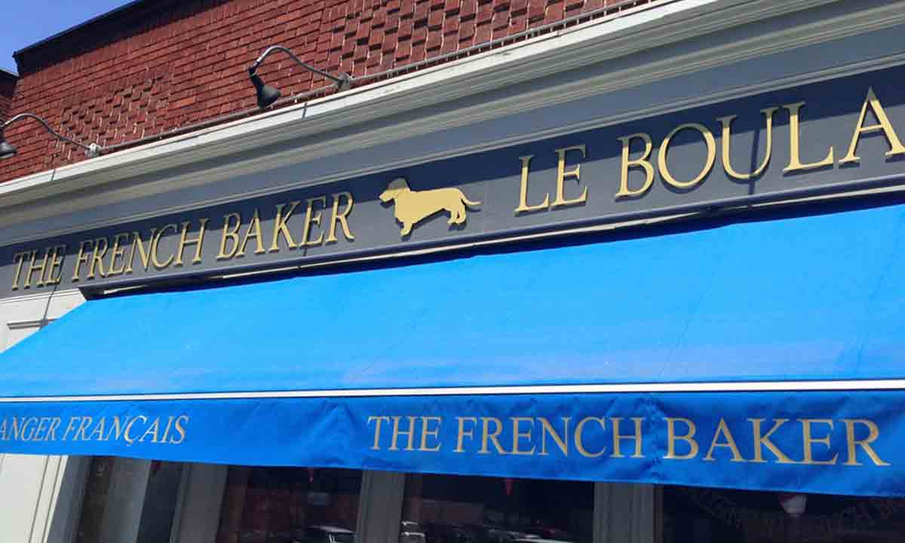

GET TO KNOW US
STORY
The French Baker opened its doors in 1995, after certified baker Jérôme Mantel relocated to Ottawa from Paris. With a motivated team of professional bakers, food and pastry chefs, The French Baker soon became recognized as one the best bakery’s in Ottawa.
OUR BAKERIES
If you're a fan of classic European café’s with quality food, great coffee, and relaxed ambience, the French Baker is for you. A popular spot for pastry lovers and coffee connoisseurs, its quaint atmosphere (with a slight modern twist) is a great spot for reading and relaxing with some savoury treats.
FOOD
Traditional French techniques applied to our baking have made our food some of the highest quality you can find in the city. Our breads are made from quality, organic flours, and are baked on stone hearths in our traditional French oven. Our pastries and chocolates are hand made and honed to perfectly represent what Parisian baking is all about. We use only the highest quality European and local ingredients that are sure to satisfy any sweet tooth or foodie.
For special orders, please call or send us an email at least twenty-four hours in advance.
PASTRIES
BEVERAGES
BREADS
DESSERTS
LOCATIONS
Byward Market
119 Murray Street
613-789-7941
The Glebe
801 Bank Street
613-236-7579
PRESS
"This sunny and simple bakery is home to the flakiest croissants in town. Order yours en francais at the counter, pull up a stool by the door, and watch the locals wander in…"
“For steaming cafes au lait, luscious cakes and perhaps the best croissants this side of the Atlantic, head to Jerome Mantel’s charming patisserie. The Parisien’s sweet and savoury treats are baked on the premises each morning to mouthwatering perfection. Ah, la vie est bonne!”